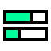
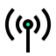
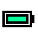
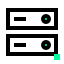
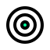
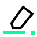
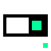

nozilla · Ikonografie · Dialekt A
Dicke Linie,
462 Icons aus dem freien Font-Awesome-Bestand, neu gezeichnet im nozilla CI: 64 × 64, 4 px Strichstärke , rechtwinklige Enden, Tinte auf Papier. Keine fremden Pfaddaten, keine Radien, keine Verläufe.
Unten rechts trägt jedes Icon denselben 6 × 6 Signal-Grün-Punkt — die Signatur des Sets, so wie die Wortmarke ihren Punkt am Wortende trägt.
Accessibility 6
braille Braille — ertastbare Schrift
closed-captioning Untertitel — Text zum Ton
ear-listen Hören — Assistenz, Verständnis
hands-asl-interpreting Gebärdensprache — Dolmetschen
universal-access Barrierefreiheit — für alle nutzbar
wheelchair Rollstuhl — barrierefreier Zugang
Alert 6
circle-exclamation Warnung — Fehler, Achtung
circle-info Info — Hinweis, Erklärung
circle-question Kreis mit Fragezeichen — Hilfe
exclamation Ausrufezeichen — Achtung
question Fragezeichen — Hilfe, unklar
triangle-exclamation Achtung — Risiko, Warnung
Animals 3
cat Katze — Haustier
fish Fisch — Meer, Nahrung
paw Tier — Haustier, Natur
Arrows 46
angle-down Winkel runter — Panel öffnen, Dropdown
angle-left Winkel links — vorheriger Schritt
angle-right Winkel rechts — nächster Schritt
angle-up Winkel hoch — Panel schließen
angles-down Doppelwinkel runter — ganz nach unten
angles-left Doppelwinkel links — schnell zurück, Anfang
angles-right Doppelwinkel rechts — schnell vor, Ende
angles-up Doppelwinkel hoch — ganz nach oben
arrow-down Pfeil runter — abwärts, weniger
arrow-left Pfeil links — zurück, rückgängig
arrow-right Pfeil rechts — vorwärts, weiter, Ziel
arrow-right-arrow-left Wechseln — hin und zurück
arrow-right-from-bracket Abmelden — Sitzung verlassen
arrow-right-to-bracket Anmelden — Sitzung betreten
arrow-rotate-left Rückgängig — Schritt zurücknehmen
arrow-rotate-right Wiederherstellen — Schritt erneut ausführen
arrow-trend-down Trend fällt — Rückgang
arrow-trend-up Trend steigt — Wachstum
arrow-up Pfeil hoch — aufwärts, mehr, Anstieg
arrow-up-right-from-square Externer Link — neues Fenster
arrows-left-right Horizontal tauschen — Breite, Gegenrichtung
arrows-rotate Synchronisieren — neu laden, abgleichen
arrows-up-down Vertikal tauschen — Höhe, Reihenfolge
arrows-up-down-left-right Verschieben — frei bewegen
caret-down Dreieck runter — Sortierung absteigend
caret-left Dreieck links — Auswahl zurück
caret-right Dreieck rechts — Auswahl vor
caret-up Dreieck hoch — Sortierung aufsteigend
chevron-down Chevron runter — ausklappen
chevron-left Chevron links — Ebene zurück
chevron-right Chevron rechts — Listeneintrag öffnen
chevron-up Chevron hoch — einklappen
compress Verkleinern — Vollbild verlassen
download Herunterladen — Datei holen
expand Vergrößern — Vollbild
location-arrow Kurs — Richtung, Navigation
repeat Wiederholen — Schleife
reply Antworten — zurückschreiben
right-left Austauschen — ersetzen
share Weiterleiten — an andere geben
share-nodes Teilen — Knoten verbinden
shuffle Zufall — Reihenfolge mischen
sort Sortieren — Spalte ordnen
turn-down Abbiegen runter — Ebene wechseln
turn-up Abbiegen hoch — Ebene wechseln
upload Hochladen — Datei senden
Astronomy 1
meteor Meteor — Einschlag, Ereignis
Automotive 1
gas-pump Tankstelle — Kraftstoff
Buildings 5
building-columns Institution — Bank, Behörde
city Stadt — Ballungsraum, Standorte
house Haus — Startseite, Zuhause
house-chimney Wohnhaus — Adresse, Privat
landmark Wahrzeichen — Ort mit Bedeutung
Business 12
briefcase Aktentasche — Auftrag, Beruf
building Gebäude — Firma, Standort
compass Kompass — Orientierung, Kurs
globe Global — weltweit, Sprache
handshake Vereinbarung — Partnerschaft
industry Industrie — Produktion, Werk
paperclip Anhang — Datei beifügen
scale-balanced Waage — Abwägung, Fairness
table Tabelle — Zeilen und Spalten
table-columns Spaltenlayout — geteilte Ansicht
tag Etikett — Kennzeichnung, Schlagwort
tags Etiketten — mehrere Schlagworte
Camping 1
tent Zelt — Unterkunft, Notlager
Charity 3
dove Taube — Frieden, Hilfe
hand-holding-heart Spende — Unterstützung geben
hands-holding-circle Verantwortung — gemeinsam tragen
Charts + Diagrams 10

bars-progress Fortschritt — Aufgabenstand
chart-area Flächendiagramm — Volumen
chart-bar Balkendiagramm — Vergleich
chart-line Liniendiagramm — Verlauf
chart-pie Kreisdiagramm — Anteile
chart-simple Kennzahlen — einfache Auswertung
circle-half-stroke Kontrast — Theme umschalten
diagram-project Projektplan — Abhängigkeiten
square-poll-vertical Umfrage — Auswertung
timeline Zeitstrahl — Ablauf, Meilensteine
Childhood 2
cookie Cookie — Einwilligung, Tracking
robot Automatisierung — Bot, Skript
Clothing + Fashion 2
glasses Lesen — Ansicht, Detail
shirt Kleidung — Merchandise, Textil
Coding 15
bars Menü — Navigation ausklappen
bug Fehler — Bug im System
bug-slash Fehler behoben — Bug entfernt
code Code — Quelltext
code-branch Branch — Entwicklungszweig
code-commit Commit — festgeschriebene Änderung
code-fork Fork — eigener Zweig, Abspaltung
code-merge Merge — Zweige zusammenführen
fire-extinguisher Notfallmaßnahme — Hotfix
laptop-code Entwicklung — Code am Rechner
microchip Chip — Rechenkern, Hardware
qrcode QR-Code — schneller Zugriff
sitemap Struktur — Hierarchie, Sitemap
terminal Terminal — Kommandozeile
window-maximize Fenster — Anwendung, Ansicht
Communication 13
comment Kommentar — Rückmeldung
comment-dots Schreibt gerade — Aktivität
comments Gespräch — Austausch
envelope E-Mail — Nachricht
envelope-open E-Mail gelesen — geöffnet
inbox Posteingang — offene Vorgänge
language Sprache — Übersetzung
paper-plane Senden — abschicken
phone Telefon — Anruf
phone-slash Anruf beenden — nicht erreichbar
rss Feed — Abo, Aktualisierungen
tower-cell Mobilfunk — Sendemast
wifi Funknetz — drahtlos verbunden
Connectivity 4
circle-nodes Netz — verbundene Knoten
satellite-dish Empfang — Signal, Satellit
signal Signalstärke — Verbindung

tower-broadcast Sendung — Live, Übertragung
Construction 7
hammer Hammer — bauen, umsetzen
helmet-safety Arbeitsschutz — Baustelle
person-digging Baustelle — in Arbeit
ruler Maßstab — Messen, Norm
screwdriver-wrench Werkzeugkasten — Instandhaltung
toolbox Werkzeugkiste — Sammlung an Mitteln
wrench Werkzeug — Wartung, Einstellung
Design 10
bezier-curve Kurve — Pfadwerkzeug
brush Pinsel — malen, gestalten
eye-dropper Pipette — Farbe aufnehmen
grip Griff — verschieben, anfassen
layer-group Ebenen — gestapelte Elemente
object-group Gruppieren — Objekte verbinden
palette Palette — Farben, Gestaltung
ruler-combined Maße — Raster, Abstände
swatchbook Farbfächer — Musterbuch
vector-square Vektor — Pfad, Ankerpunkte
Devices + Hardware 15

battery-full Akku voll — genug Energie
battery-half Akku halb — begrenzte Reserve
computer-mouse Maus — Zeigegerät
desktop Desktop — Arbeitsplatzrechner
floppy-disk Speichern — Fassung sichern
hard-drive Festplatte — lokaler Speicher
keyboard Tastatur — Eingabe
laptop Laptop — mobiler Rechner
mobile-screen Smartphone — mobile Ansicht
network-wired Netzwerk — verkabelte Geräte
plug Stecker — Verbindung, Integration
power-off Ein · Aus — Gerät schalten
print Drucken — auf Papier ausgeben

server Server — Dienst, Infrastruktur
tablet-screen-button Tablet — mittlere Ansicht
Editing 12
clone Klonen — zweite Instanz
crop-simple Zuschneiden — Bildausschnitt
eraser Radierer — zurücksetzen
filter Filtern — Auswahl eingrenzen
magnifying-glass Suchen — finden
magnifying-glass-minus Verkleinern — herauszoomen
magnifying-glass-plus Vergrößern — hineinzoomen
pen Stift — schreiben, ändern
pen-to-square Bearbeiten — Eintrag ändern
rotate Drehen — Ausrichtung ändern
scissors Ausschneiden — trennen
wand-magic-sparkles Automatisch — vom System erzeugt
Education 4
book-open-reader Lernen — Wissen aneignen
chalkboard Tafel — Schulung, Erklärung
graduation-cap Abschluss — Qualifikation
school Schule — Ausbildung, Lernen
Emoji 4
face-frown Unzufrieden — negatives Feedback
face-meh Neutral — unentschieden
face-smile Zufrieden — positives Feedback
face-surprise Überrascht — unerwartet
Energy 7
bolt Blitz — Energie, Tempo
charging-station Ladestation — Strom tanken
fan Lüfter — Kühlung, Umluft
fire Feuer — dringend, brennend
lightbulb Idee — Vorschlag, Einfall
recycle Kreislauf — wiederverwenden
solar-panel Solarmodul — erneuerbare Energie
Files 16
box-archive Archivieren — einlagern
cloud-arrow-down Aus der Cloud laden
cloud-arrow-up In die Cloud laden
copy Kopieren — Duplikat anlegen
database Datenbank — Speicher
file Datei — einzelnes Dokument
file-circle-plus Datei anlegen — neu erstellen
file-code Quelltextdatei — Code
file-image Bilddatei — Foto, Grafik
file-lines Textdatei — Dokument mit Inhalt
file-pdf PDF — Druckdokument
file-zipper Archiv — komprimierte Dateien
folder Ordner — Sammlung
folder-open Ordner offen — geöffnete Ablage
paste Einfügen — aus Zwischenablage
trash Papierkorb — löschen
Film + Video 4
clapperboard Klappe — Produktion, Take
podcast Podcast — Beitrag, Stimme
ticket Ticket — Zugang, Vorgang
tv Bildschirm — Ausspielung, Sendung
Food + Beverage 4
burger Mittagspause — Verpflegung
mug-saucer Kaffee — Pause, Termin
utensils Essen — Gastronomie, Pause
wine-glass Anstoßen — Feier, Erfolg
Fruits + Vegetables 3
apple-whole Apfel — gesund, natürlich
carrot Möhre — Anreiz, frisch
lemon Zitrone — frisch, sauer
Gaming 4
chess-knight Zug — Strategie, Taktik
dice Würfel — Zufall, Variante
gamepad Steuerung — Spiel, Eingabe
puzzle-piece Baustein — Modul, Erweiterung
Genders 1
venus-mars Geschlecht — Vielfalt, Angabe
Halloween 1
ghost Unsichtbar — Platzhalter, Entwurf
Hands 1
hand Hand — Stopp, Geste
Household 4
chair Platz — Arbeitsplatz, Sitzung
couch Sofa — Wohnen, Einrichtung
door-open Tür offen — Zugang möglich
faucet Wasserhahn — Verbrauch, Zufluss
Logistics 4
boxes-stacked Bestand — gestapelte Ware
gears Prozesse — Abläufe, Automatik
truck Lieferung — Transport, Versand
warehouse Lager — Bestand, Logistik
Maps 15
crosshairs Fadenkreuz — genau anvisieren
draw-polygon Fläche zeichnen — Gebiet erfassen
flag Flagge — Marker, Meilenstein
flag-checkered Zielflagge — Abschluss erreicht
gavel Hammer — Entscheidung, Recht
life-ring Hilfe — Support, Rettung
location-crosshairs Aktueller Standort — orten
location-dot Markierter Punkt — Ort auf der Karte
location-pin Standort — Ort, Adresse
magnifying-glass-location Ortssuche — Standort finden
map Karte — Übersicht, Gebiet
map-location-dot Karte mit Standort — Position
road Straße — Verbindung, Weg
route Route — geplanter Weg
signs-post Wegweiser — Richtung, Beschilderung
Maritime 2
anchor Anker — Festpunkt, Verweis
ship Schiff — Fracht, See
Marketing 2
bullhorn Ansage — Kampagne, Reichweite

bullseye Ziel — Treffer, Fokus
Mathematics 12
calculator Rechner — Kalkulation
check Haken — erledigt, bestätigt
divide Geteilt — aufteilen
equals Gleich — identisch, Ergebnis
greater-than Größer als — Schwelle
infinity Unendlich — ohne Limit
less-than Kleiner als — Schwelle
minus Minus — entfernen, weniger
percent Prozent — Anteil, Rabatt
plus Plus — hinzufügen, neu
square-root-variable Wurzel — Formel, Berechnung
xmark Kreuz — schließen, abbrechen
Media Playback 17
backward Zurückspulen — langsamer
backward-fast An den Anfang — schnell zurück
backward-step Vorheriger Titel
circle-pause Pause im Kreis
circle-play Abspielen im Kreis — Video starten
circle-stop Stopp im Kreis — Vorgang beenden
eject Auswerfen — Medium entfernen
forward Vorspulen — schneller
forward-fast Ans Ende — schnell vorspulen
forward-step Nächster Titel
microphone Mikrofon — Aufnahme, Sprache
microphone-slash Mikrofon aus — stumm geschaltet
pause Pause — anhalten
record-vinyl Aufnahme — Schallplatte
stop Stopp — beenden
volume-high Ton laut
volume-xmark Ton aus — stumm
Medical + Health 10
bandage Pflaster — Behelfslösung, Fix
brain Denken — Konzept, Logik
heart-pulse Vitalwerte — Gesundheit, Puls
hospital Krankenhaus — Versorgung
kit-medical Erste Hilfe — Notfallset
pills Medikament — Dosis, Therapie
skull Ausfall — kritischer Fehler
stethoscope Untersuchung — Diagnose
syringe Impfung — Behandlung
user-doctor Fachkraft — Beratung, Diagnose
Money 9
coins Münzen — Guthaben, Kosten
credit-card Karte — bargeldlos zahlen
dollar-sign Dollar — Betrag, Umsatz
euro-sign Euro — Preis, Betrag
file-invoice Rechnung — Zahlungsaufforderung
money-bill Geldschein — Bargeld, Budget
piggy-bank Sparen — Rücklage
receipt Beleg — Quittung, Rechnung
wallet Geldbörse — Zahlungsmittel
Moving 1
box-open Paket offen — ausgepackt, verfügbar
Music + Audio 4
guitar Gitarre — Kultur, Kreatives
headphones Kopfhörer — Wiedergabe, Support
music Musik — Audio, Klang
sliders Regler — Einstellungen anpassen
Nature 5
leaf Blatt — nachhaltig, ressourcenschonend
mountain Berg — Herausforderung, Gipfel
seedling Setzling — Start, Wachstum
tree Baum — Bestand, Hierarchie
water Wasser — Fluss, Strom
Numbers 4
0 Ziffer Null
1 Ziffer Eins
2 Ziffer Zwei
3 Ziffer Drei
Photos + Images 6
camera Kamera — aufnehmen
film Film — Sequenz, Schnitt
image Bild — Grafik, Foto
images Bilder — Galerie
panorama Panorama — Weitwinkel
video Video — bewegtes Bild
Political 2
award Auszeichnung — Anerkennung
check-to-slot Abstimmen — Stimme abgeben
Punctuation + Symbols 7
asterisk Sternchen — Pflichtfeld, Fußnote
at At-Zeichen — E-Mail-Adresse
ellipsis Drei Punkte — mehr Optionen
ellipsis-vertical Drei Punkte hoch — Kontextmenü
hashtag Raute — Tag, Kanal, Nummer
quote-left Anführungszeichen — Zitat
section Paragraf — Abschnitt, Recht
Religion 2
peace Frieden — Ausgleich
yin-yang Gleichgewicht — Ausgleich zweier Seiten
Science 7
atom Atom — Grundbaustein, Forschung
dna DNA — Struktur, Herkunft
flask Experiment — Test, Labor
magnet Magnet — Anziehung, Bindung
microscope Analyse — genau untersuchen
temperature-high Hitze — Grenzwert überschritten
vial Probe — Messwert, Analyse
Security 14
eye Sichtbar — anzeigen
eye-slash Verborgen — ausblenden
file-shield Geschützte Datei — vertraulich
fingerprint Fingerabdruck — eindeutige Identität
id-badge Dienstausweis — Rolle, Zutritt
key Schlüssel — Zugang, Zugangsdaten
lock Gesperrt — geschützter Bereich
lock-open Entsperrt — Zugriff frei
shield Schutz — abgesichert
shield-halved Teilschutz — abgestufte Sicherheit
unlock-keyhole Schloss offen — freigegeben
user-secret Anonym — nicht identifiziert
user-shield Datenschutz — geschützte Person
virus Schadsoftware — Bedrohung
Shapes 13
ban Verboten — gesperrt, nicht erlaubt
bookmark Lesezeichen — gemerkt, später
certificate Siegel — Zertifikat, geprüft
circle Kreis — Status, Punkt, Marker
cloud Wolke — Cloud, entferntes System
cube Würfel — Paket, Modul, Objekt
diamond Raute — Knotenpunkt, Entscheidung
heart Herz — gemerkt, gemocht
play Dreieck — abspielen, starten
shapes Formen — Bausteine, Elemente
square Quadrat — Fläche, Kachel
star Stern — Bewertung, Favorit
thumbtack Pinnadel — anheften, fixieren
Shopping 11
bag-shopping Einkaufstasche — Kauf
barcode Barcode — Artikelnummer
cart-shopping Warenkorb — Bestellung
crown Krone — höchste Stufe, Premium
gem Wertig — Premium, besonders
gift Geschenk — Bonus, Aktion
shop Laden — Geschäft, Filiale
star-half-stroke Halber Stern — Teilbewertung
store Filiale — Verkaufsstelle
trophy Pokal — Erfolg, Sieg
truck-fast Expressversand — schnelle Lieferung
Social 2
thumbs-down Ablehnung — gefällt nicht
thumbs-up Zustimmung — gefällt
Spinners 4
circle-notch Ladering — Fortschritt unbestimmt
hourglass Sanduhr — Wartezeit
hourglass-half Sanduhr halb — läuft noch
spinner Ladeanzeige — arbeitet
Sports + Fitness 4
dumbbell Training — Belastungstest
futbol Ball — Spiel, Wettbewerb
medal Medaille — Platzierung
person-running Laufen — Tempo, aktiv
Text Formatting 22
align-center Zentriert
align-justify Blocksatz
align-left Linksbündig
align-right Rechtsbündig
bold Fett — starke Betonung
font Schrift — Typografie wählen
heading Überschrift — Hierarchie

highlighter Marker — Schlüsselbegriff hervorheben
indent Einrücken — Ebene tiefer
italic Kursiv — leichte Betonung
link Link — Verweis setzen
link-slash Link entfernen — Verweis lösen
list-ol Nummerierte Liste — Reihenfolge
list-ul Aufzählung — ungeordnet
outdent Ausrücken — Ebene höher
paragraph Absatz — Textblock
quote-right Zitat schließen
strikethrough Durchgestrichen — nicht mehr gültig
subscript Tiefgestellt — Index
superscript Hochgestellt — Exponent
text-height Zeilenhöhe — vertikaler Abstand
underline Unterstrichen
Time 6
bell Benachrichtigung — Hinweis
bell-slash Benachrichtigung aus — stummgeschaltet
calendar-check Termin bestätigt — eingetragen
calendar-days Kalender — Termine, Monat
clock Uhr — Zeitpunkt, Dauer
stopwatch Stoppuhr — Messung, Tempo
Toggle 9
circle-check Kreis mit Haken — erfolgreich
circle-dot Radio gewählt — eine Option
circle-minus Kreis mit Minus — entfernen
circle-plus Kreis mit Plus — hinzufügen
circle-xmark Kreis mit Kreuz — fehlgeschlagen
square-check Kästchen angehakt — ausgewählt
square-minus Kästchen teilweise — gemischte Auswahl
toggle-off Schalter aus — inaktiv

toggle-on Schalter an — aktiv
Transportation 6
bicycle Fahrrad — kurze Wege
bus Bus — Nahverkehr
car Auto — Fahrt, Anreise
motorcycle Motorrad — schneller Kurier
rocket Start — Launch, neues Vorhaben
train Zug — Bahn, Schiene
Travel + Hotel 6
bed Bett — Übernachtung, Ruhe
earth-europe Erde — global, international
hotel Hotel — Übernachtung
plane Flug — Reise, weite Strecke
suitcase-rolling Koffer — Reise, Gepäck
taxi Taxi — Fahrdienst
Users + People 11
address-book Adressbuch — Kontakte
circle-user Profilbild — Konto im Kreis
id-card Ausweis — Identität, Zugang
person-walking Fußweg — unterwegs, Weg
user Person — Nutzerkonto
user-check Person bestätigt — freigegeben
user-gear Kontoeinstellungen — Profil verwalten
user-group Personengruppe — Abteilung
user-plus Person hinzufügen — einladen
user-tie Ansprechpartner — Kundenkontakt
users Gruppe — Team, mehrere Personen
Weather 9
cloud-bolt Gewitter — Unwetter
cloud-rain Regen — Niederschlag
cloud-sun Wechselhaft — teils sonnig
moon Mond — dunkel, Nachtmodus
snowflake Schnee — Kälte, Frost
sun Sonne — hell, Tagmodus
temperature-half Temperatur — Messwert, Klima
umbrella Schirm — Absicherung, Schutz
wind Wind — Bewegung, Strömung
Writing 9
book Buch — Dokumentation, Leitfaden
book-open Aufgeschlagenes Buch — lesen
clipboard Zwischenablage — übernommen
clipboard-check Checkliste geprüft — abgehakt
list-check Aufgabenliste — Fortschritt
newspaper Nachrichten — Presse, Meldung
note-sticky Notiz — kurze Anmerkung
pen-nib Federkiel — Autorenschaft
signature Unterschrift — freigegeben
Kein Treffer. Der vollständige Katalog aller 1895 freien Font-Awesome-Namen steht in ICONS.md .